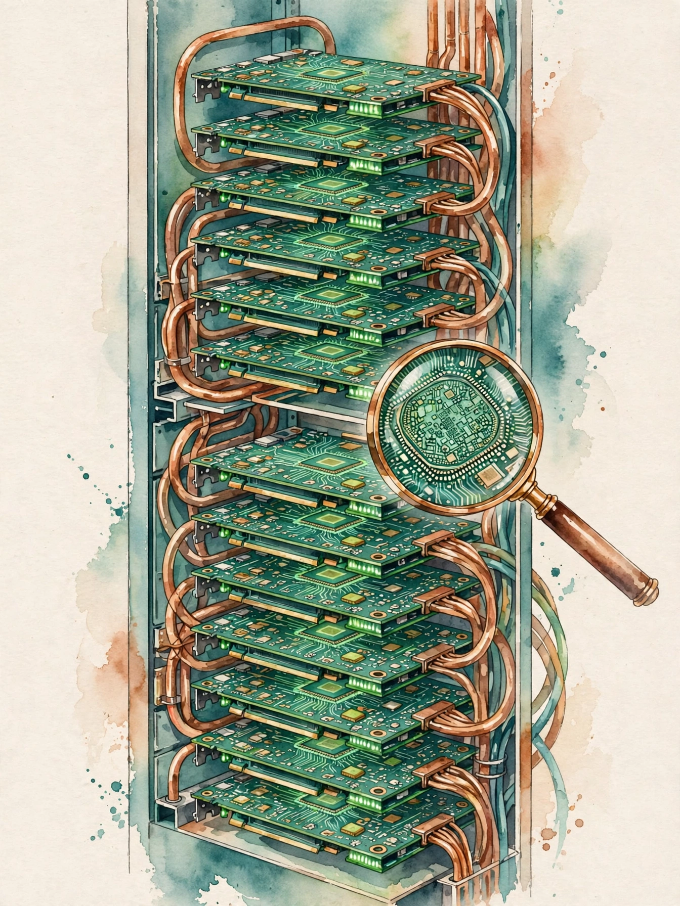

Dwarkesh Patel · Ep 11 · Companion
Synthesis: Inside the Machine
The track's synthesis chapter opens the box the episodes priced but never opened: the GPU die, the 8-GPU server, the rack, the cluster, and the gigawatt datacenter. This companion narrates that lesson section by section, with its provenance tags intact.

Illustration. Die, server, rack, cluster, datacenter: the five-layer stack in cross-section. AI-generated watercolor made for this page.
§1 · Why this chapter matters
The Guests Priced the Stack. This Chapter Opens It
Source fact
The ten episodes cover two hardware angles well: why Nvidia is expensive (ep07's full-stack moat) and the economics of building at scale (ep01's power math, ep08's gigawatt datacenters and $10B models). The third angle, what is actually inside the machines, stays thin. Guests talk about GPUs the way economists talk about oil: as a priced input.
This synthesis opens the box: the GPU die, the rack, and the cluster, assembled from episode claims plus verified 2026 sources. Every claim carries its provenance: [episode] for what the guests said, [added] for what the synthesis adds.
Nugget 1 · Framing
The guests priced the stack, and this chapter opens it
What happened. Ten episodes priced compute without opening a single machine. The synthesis fills the missing layer.
Why it matters. Prices without internals are trivia. Internals turn prices into engineering decisions.
The principle. Whenever experts price a thing, ask what is inside it. The box is where the advantage hides.
§2 · The story
What the Episodes Give Us [episode]
Source fact
Assembled from the track's own claims:
- Ep01 (Elon): about 330K GB300 GPUs ≈ 1GW of power. The power math: compute is electricity.
- Ep07 (Jensen): the full-stack moat, silicon through networking through CUDA through supply chain to AI factories. The unit customers buy is the factory, not the chip.
- Ep08 (Zuck): 1GW datacenters, power, cooling, networking, multi-year supply chain, and the path to $10B training runs.
- Ep05 (Dario): the compute-buying arithmetic: hundreds of billions, not trillions, sized to survive being wrong.
What none of the episodes open: the GPU itself, the rack that holds eight of them, and how racks become a cluster.
§3 · Inside the GPU [added]
A GPU Is Multiply-Add at Scale
Source fact
A datacenter GPU of the H100/H200/GB200 generation is a small city of parallel arithmetic:
- Streaming multiprocessors: about 144 on an H100, each with tensor cores for matrix math. The tensor cores are the AI: they do the multiply-accumulate operations neural networks are made of, at low precision, very fast.
- High-bandwidth memory: stacked memory dies next to the compute, about 80GB on an H100, with around 3TB/s of bandwidth. The bottleneck in AI is usually moving data, not computing. HBM is the answer.
- NVLink: high-speed interconnects between GPUs, so eight GPUs in a server act as one bigger GPU.
- The die is huge, about 800mm² on a 4nm-class process, which is why yields and cost are what they are. This is the physical reason behind ep07's silicon layer.
The key intuition: a GPU is a machine for doing the same simple operation, multiply then add, billions of times in parallel, with the memory system designed to feed it. The rest is just pipes.
Nugget 2 · Hardware
A GPU is multiply-add at scale
What happened. Strip the marketing and the GPU is one operation, repeated billions of times, kept fed by exotic memory.
Why it matters. Simple repeated operations are what parallelize. Complexity is the enemy of scale.
The principle. Find the one operation that matters and repeat it. Elegance is repetition at speed.
Nugget 3 · Bottlenecks
HBM feeds the beast
What happened. AI is bottlenecked by moving data, not by arithmetic. HBM stacks memory against the die for 3TB/s.
Why it matters. Infinite FLOPs with slow memory starves. The feed matters more than the mouth.
The principle. Find the true bottleneck before optimizing. It is usually the pipe, not the pump.
§4 · Inside the rack [added]
Eight GPUs: One Bigger Machine
Source fact
The DGX/HGX unit: 8 GPUs in one server chassis, connected by NVLink/NVSwitch so they share memory at high bandwidth. This is the "one machine" of ep07's networking layer:
- 8 GPUs with NVLink: the compute.
- CPUs: the coordinators, data loading and orchestration.
- Networking: InfiniBand or Ethernet to connect servers.
- Power: tens of kilowatts per rack. Cooling to match.
The rack is the smallest unit that trains real models. One GPU is a toy. Eight is a workstation. The rack is where distributed training begins.
Nugget 4 · Units
Eight GPUs: one bigger machine
What happened. NVLink fuses eight GPUs into one memory-sharing machine. The rack is the smallest real training unit.
Why it matters. The unit of thought is the smallest assembly that does the job, not the chip.
The principle. Think in assemblies, not components. The machine is the unit, not the part.
§5 · Building the cluster [added]
Something Is Always Broken
Source fact
From racks to the 1GW datacenter of ep08, in three steps:
- Racks become rows: dozens of 8-GPU servers, connected by the datacenter fabric.
- Rows become a cluster: thousands of GPUs acting as one machine via collective communication, all-reduce for gradient synchronization.
- The cluster becomes a datacenter: power (the 1GW of ep01/ep08), cooling (gigawatt-scale heat rejection), and the multi-year supply chain.
The failure math: at thousands of GPUs, something is always broken. Cluster software must route around dead GPUs, checkpoint constantly, and restart. This is the operational reality behind "the factory": 10,000 GPUs with a few always broken and the system not caring, rather than 10,000 working ones.
Failure regime by scale
Hover any row for detail.
Source: Dwarkesh Patel track, ep11 synthesis lesson §5. Failure regimes are the lesson's characterization.
Nugget 5 · Operations
Something is always broken
What happened. At thousands of GPUs, dead hardware is the steady state. The software routes around it.
Why it matters. Scale changes the failure model from exception to environment. Design for the environment.
The principle. At scale, assume breakage. Checkpoint, route around, restart.
Toy: the cluster sizer
Pick a GPU count. See racks, rows, and power on the lesson's arithmetic.
Arithmetic: 8 GPUs per server, tens of kW per rack at ~10 kW. The 1GW figure is Elon's ep01 number.
§6 · The five-layer stack
Die to Datacenter
Source fact
The five layers, die to datacenter
Hover any bar for detail. Log scale on unit size.
Source: Dwarkesh Patel track, ep11 synthesis lesson. Provenance tags [episode]/[added] are the lesson's own.
Tensor cores: the AI. HBM: the food. NVLink: the glue.
The lesson's memory aid · ep11 synthesis
Nugget 6 · Memory aid
Tensor cores: the AI. HBM: the food. NVLink: the glue
What happened. The lesson compressed the whole stack into twelve words: compute, memory, interconnect.
Why it matters. Twelve words you can hold in your head beat a datasheet you cannot.
The principle. Compress ruthlessly. If it does not fit in a sentence, you do not own it yet.
§7 · Questions and answers
Five Questions, Answered
Source fact
What is a tensor core? A specialized arithmetic unit that does matrix multiply-accumulate very fast at low precision. Neural networks are mostly matrix multiplications. Tensor cores are the hardware that makes them economical. The rest of the GPU exists to feed them.
Why does HBM matter more than raw compute? Because AI is bottlenecked by moving data, not by arithmetic. HBM stacks memory next to the compute die for about 3TB/s of bandwidth. A GPU with infinite FLOPs and slow memory starves. HBM keeps it fed.
Why 8 GPUs per server? NVLink connects 8 GPUs at high enough bandwidth that they share memory effectively, acting as one bigger GPU. Beyond 8, the interconnect physics gets harder. The datacenter fabric takes over between servers.
What breaks at cluster scale? Everything, constantly. At thousands of GPUs, some are always dead. The software must checkpoint, route around failures, and restart without losing the training run. Operating the factory means operating broken hardware gracefully.
How does this connect to the episode claims? Elon's 330K GPUs at 1GW is the top of this stack. Jensen's factory is the whole stack as a product. Zuck's 1GW datacenter is the physical plant. Dario's hundreds of billions is what the stack costs. This chapter fills in the layers the episodes price but do not open.
§8 · Use it
Price Each Layer Separately
Source fact
The lesson's applied rule: if you size a cluster, the unit of thought is the rack (8 GPUs) for development, the cluster (thousands) for training, the datacenter (hundreds of thousands) for the frontier. Price each layer separately: GPUs, networking, power, cooling, and the operations to keep broken hardware from stopping you.
Nugget 7 · Applied
Price each layer separately
What happened. The lesson gave a sizing discipline: rack for dev, cluster for training, datacenter for the frontier.
Why it matters. Single-number estimates hide which layer bites. Layered prices show where to optimize.
The principle. Decompose before you budget. Five prices beat one guess.
The chapter in seven lines
- The episodes priced compute. This chapter opens the machines.
- A GPU is multiply-accumulate at scale: 144 SMs, tensor cores, 3TB/s of HBM.
- Eight GPUs with NVLink make one bigger machine. That is the rack.
- Racks become rows, rows become clusters, clusters become the 1GW datacenter.
- At thousands of GPUs, something is always broken. Checkpoint, route around, restart.
- Tensor cores: the AI. HBM: the food. NVLink: the glue.
- Size by layer: rack for dev, cluster for training, datacenter for the frontier.
Distilled from the track's ep11 synthesis lesson (ep11-synthesis.html). Provenance: [episode] claims from the track's guests, [added] from verified 2026 sources per the lesson.